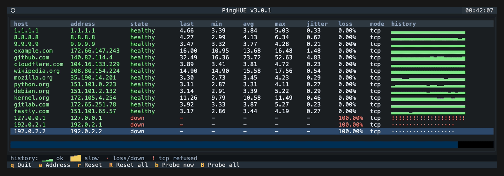

ICMP the default
$ pinghue 1.1.1.1 8.8.8.8 example.comConcurrent echo probes with the full TUI: history bars, states, and keyboard control.
▁▃▅ # for the 02:00 change window
Monitor every host in one live table, then export structured JSON evidence when the maintenance window closes.
uv tool install pinghue
brew install inxbit/tap/pinghue
the story continues below · skip to install
02:12
One lost echo out of seven hundred. Loss ticks up, the state flips to intermittent, and the history bar keeps the dot. A blip you would have missed is now on the record.
02:12:41 · api-gw · 1 echo lost · loss 3% · intermittent
Host states reflect the whole run, not the last few probes.
02:18
Latency climbs from 18ms into the 300s. The glyphs go amber on the fixed scale, jitter spikes, and the average remembers it. No rescaling, no smoothing: slow looks slow.
02:18:23 · db-primary · last 438ms · jitter 37ms · ▆▆▇
Latency maps to a fixed glyph scale that never changes between runs.
02:31
Three consecutive failures and the state goes down. It stays down until the host answers again, not until the graph scrolls past.
02:31:04 · backup-nas · 3 consecutive fails · down
Fail-on-down exit codes let cron and CI act on it.
02:47
Forty-seven minutes, eight hosts, every probe accounted for. Export the evidence, attach it to the change ticket, and go back to bed.
02:47:56 · window closed · 8 hosts · 2 intermittent · 1 down · evidence written
| HOST | LAST | AVG | LOSS | JITTER | STATE | HISTORY |
|---|---|---|---|---|---|---|
| edge-router-1 | 9.1ms | 9.4ms | 0% | 0.2ms | healthy | ▃▃▃▃ |
| edge-router-2 | 12.4ms | 11.8ms | 0% | 0.3ms | healthy | ▄▄▄▄ |
| core-sw-1 | 2.1ms | 2.0ms | 0% | 0.1ms | healthy | ▂▂▂▂ |
| db-primary | 18.6ms | 61.2ms | 0% | 2.1ms | intermittent | ▄▄▆▆ |
| cdn-edge | 23.8ms | 24.1ms | 0% | 0.5ms | healthy | ▄▄▄▄ |
| api-gw | 30.7ms | 31.0ms | 3% | 0.4ms | intermittent | ▅▅·▅ |
| backup-nas | - | 6.1ms | 41% | 0.2ms | down | ▃▃·· |
| dns-resolver | 1.0ms | 1.1ms | 0% | 0.1ms | healthy | ▁▁▁▁ |
Up to 1024concurrent probes
Schema version 1stable JSON evidence
macOS and Linuxsupported platforms
No server or daemonlocal by design
$ pinghue 1.1.1.1 8.8.8.8 example.comConcurrent echo probes with the full TUI: history bars, states, and keyboard control.
$ pinghue -p 443 example.com api.internalConnect checks against any port, 1 to 65535. Refused connections get their own amber marker.
$ pinghue -p 443 example.com -c 3 --no-tui
2026-05-14T18:32:11.420000+00:00 example.com ok latency=14.08msOne line per probe, fail-on-down exit codes, and --output for the report.
Latency maps to a fixed glyph scale. It never rescales, so rows stay comparable across hosts, and across runs. Try it:
14 milliseconds maps to glyph 4 of 8, green.
A host that blips once stays intermittent until you reset it. A maintenance-window report should reflect everything that happened, not only the final moments.

$ pinghue -f hosts.txt --duration 180 --output maintenance.json{ "schema_version": 1, "pinghue_version": "5.0.0", "run": { "host": "local", "exit_reason": "deadline", … }, "targets": [ { "target": "db-primary", "status": "intermittent", "stats": { "sent": 180, "received": 178, "loss_pct": 1.11, … } } ]}schema_version: 1. Breaking changes require a new schema version.stats covers every probe in the run; samples is the recent tail.0600, and existing files are never replaced without --overwrite.# what pinghue is not
A focused local tool for maintenance windows, migrations, and quick reachability checks. Nothing more, on purpose.
uv tool install pinghue
pipx install pinghue
brew install inxbit/tap/pinghue
python -m pip install pinghue
macOS and Linux, Python 3.10 to 3.14. Then run the environment doctor: pinghue --check.
On Linux, ICMP may need a one-line ping_group_range fix, or just use TCP mode.